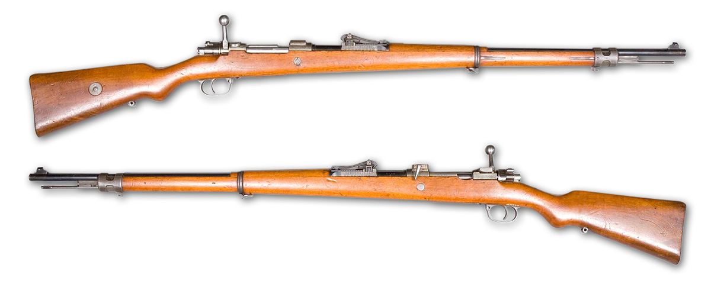
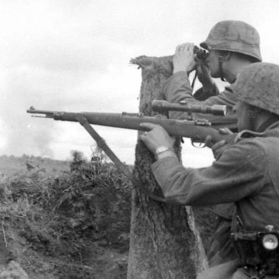

概要
Karabiner 98k（Kar98k）はドイツで開発されたボルトアクション式小銃で、1935年に制式採用後、1945年まで生産される。
kar98kは通称での名前で、正式名称はKarabiner 98 kurzで、略称はK98kである。
ちなみにKarabiner（カラビナー）は騎兵銃、98は母体のGewehr98の制式採用がされた1898年を示し、kurz（クルツ）は短いを意味している。
全体の読み方として「1898年の短型騎兵銃」と読む。
スペック（特徴）
- 製造国：ナチス・ドイツ（一部占領国でも生産）
- 全長： 1,110mm
- 重量： 約4kg
- ライフリング：4条右回り
- 口径：7.92mm
- 使用弾薬： 7.92×57mm モーゼル弾
- 装弾数： 5発（内部マガジン）
- 作動方式： ボルトアクション方式
- 銃口初速：760m/s
- 射程：500m
- 最大射程： 1000m（照準器装備時）
- 製造数：14,600,000挺
歴史とかいろいろ
 Gewehr98  スコープ付きKar98k
Kar98kは帝政ドイツ時代に採用された歩兵銃Gewehr98の派生型の騎兵銃で、命中精度や安全装置の設計に優れておりドイツ国防軍などで正式採用され、狙撃銃として使用することもでき、光学照準器（ライフルスコープ）を取り付けることで威力を発揮し、連合国兵士の脅威になったとされている。
さらに狙撃銃以外の用途として、銃口に小銃擲弾投射器（ライフルグレネード）を装着することができる。
第二次世界大戦後もドイツ以外の国で使用され、現在では捧げ銃（銃を用いた敬礼の一種）として使用されている。
なお日本国内ではエアソフトガンやモデルガンとして販売されています。
ゲーム
kar98kはFPSやTPSに登場する。
PUBGでは遠距離～中距離狙撃銃として初期から登場しており、7.62mm弾使用、スコープが装備できる。
他にもCoDシリーズやEnlisted（エンリステッド）といった第二次世界大戦が舞台の作品では頻繁に登場している。
ゲーム内の特徴では独特な操作感や一撃必殺（ヘッドショット）のイメージが高い。
用語
- FPS(First Person Shooter)：一人称視点シューティングゲーム
- TPS(Third Person Shooter)：三人称視点シューティングゲーム
- CoD(Call of Duty)：アメリカ合衆国生まれのミリタリー系一人称シューティングゲーム
- Enlisted：Gaijin Entertainmentによりリリースされた大規模多人数同時参加型オンラインRPG